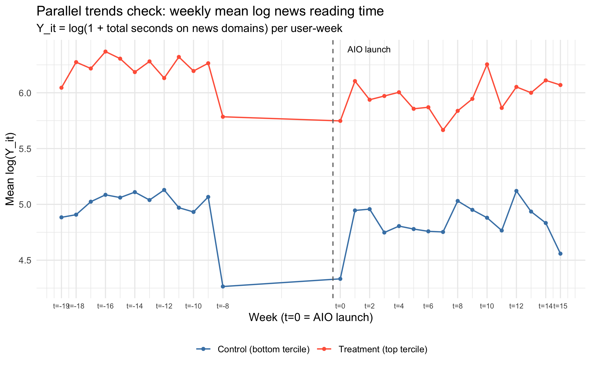

Causal Inference - Exposure to AI Overviews and News Consumption
A research design examining how Google's search engine AI Overviews (launched May 2024) affect user news consumption, using difference-in-differences framework.
Built a synthetic data generator producing search data and browsing records. Implemented a causal pipeline with first-stage exposure validation, parallel trends testing, and synthetic DiD robustness checks.
Poster